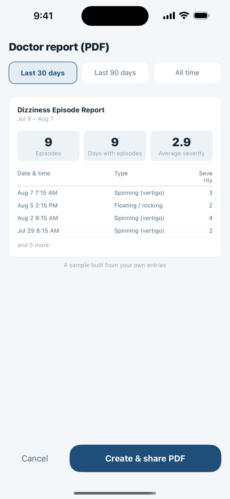

Full details and common questions
Write to nosunosukawa@gmail.com. Questions, bug reports, requests and refund questions all go to the same address.
During the attack
Built to be usable when you cannot look at a screen for long
The recording screen asks three things, and each one is a single tap on a big target. Nothing is typed. Nothing is scrolled through.
- What kind of dizziness? Spinning (vertigo), floating / rocking, lightheaded, or other.
- How long did it last? Under a minute, 1–20 minutes, 20 minutes to half a day, or more than half a day.
- How bad was it? Five steps, shown as a line that tilts further as it gets worse — because what people actually say is that the world tipped over.
The timer
If you can, there is a timer: tap “Having an episode now” when it starts and “It's over — log it” when it stops. The duration is then measured rather than estimated afterwards, and that question is already answered when the form opens. The timer survives the app being closed, so you can put the phone down.
The optional part, for later
Under “Details (optional)” you can add possible triggers — head movement or rolling over, standing up quickly, poor sleep, stress, salty food, caffeine, alcohol, weather, menstrual cycle — and symptoms that came with it, such as tinnitus, muffled hearing, ear fullness, nausea, vomiting or headache. Plus what you took and a free note. None of it is required to save.
You can also enter an episode you missed, on a past date.
Air pressure is attached by itself: the iPhone's own barometer is read at the moment you save, so the number stored with the episode is a measurement, not a forecast. If the sensor cannot be read, the field is simply left empty and never filled in later.

At the appointment
The reason most people start a diary: being able to answer the doctor's questions
For dizziness, what a clinician usually needs is narrow and specific: what kind of episode, how long it lasted, and how often it happens. That is exactly what the report prints.
Open Doctor report (PDF), choose Last 30 days, Last 90 days or All time, and share the file — print it, mail it to yourself, or hand your phone over in the room.
What is on the sheet
- Summary: number of episodes and days with episodes — plus your average sleep and stress, if you also keep the daily log.
- Breakdowns: by type, by duration, by severity, and tallies of the triggers and accompanying symptoms you ticked.
- The episode list itself — date and time, type, duration, severity, air pressure, the triggers, symptoms and medication for that episode, and your note.
It is text and one table. No charts, nothing dressed up. The report also carries its own footer, in plain words: it lists entries recorded by the patient, it contains no diagnosis or medical assessment, and the duration bands are self-reported.
The preview is built from your own entries, so you can see what the doctor will see before you generate the file.
If your clinic wants the raw numbers
There is also a CSV export of every episode — one row each, with the date, start time, type, duration band, measured seconds, severity, pressure in hPa, triggers, symptoms, medication and note. It is written as UTF-8 with a byte-order mark so spreadsheets open it without mangling the text.

Weather and barometric pressure
What the pressure numbers are — and what they are deliberately not
DizzyLog keeps two different pressure numbers, and it is worth knowing which is which.
- Pressure at your episodes — measured by your iPhone's barometer at the moment you logged, stored with that record.
- A 48-hour pressure forecast for your area, from Apple Weather, so you can see what is coming. Pro can overlay the pressure at your own episodes on the same chart.
Both are shown as facts about the air, in the unit your region uses — hPa in most of the world, inHg in the United States. What the app will never do is tell you that pressure caused an attack, or that one is coming.
“These are tallies of your own entries (correlations), not causes or predictions.” — shown in the app, under the trigger patterns.
“This is a barometric pressure forecast. It does not tell you how you will feel. Talk to a doctor about symptoms that concern you.” — shown in the app, under the pressure chart.
Whether the weather moves your symptoms is a real question, and it is one for you and your doctor. The app's job is to put your episodes and the air pressure on the same timeline so the question can be asked with actual dates attached to it, instead of an impression.
You do not have to share your location
On the pressure screen you can pick a region from a list by hand, or skip pressure entirely — recording episodes does not depend on it, and if you decline the permission the region list opens instead. If you do use your current location, the coordinate is taken at the coarsest accuracy iOS offers and then rounded to a grid of roughly 28 km before it is used at all.
Free and Pro
Recording is free and unlimited. The purchase is for getting the record back out.
A dizziness diary that locks up the recording is useless during an attack, so it does not. There is no trial clock, no ad, and no subscription anywhere in this app.
| Free, forever | DizzyLog Pro — one time |
|---|---|
| Unlimited episode recording, with the timer | The doctor-ready PDF report |
| Triggers, accompanying symptoms, medication, notes | Trigger patterns in Insights |
| Entering an episode you missed, on a past date | The pressure at your own episodes, overlaid on the forecast chart |
| Full history, calendar heat map and day view | CSV export of every record |
| The daily log — sleep, stress, salt, water, caffeine, alcohol | Unlimited medication reminders |
| Insights by month, type, duration and severity | |
| The 48-hour pressure forecast for your area | |
| One medication reminder | |
| Light and dark appearance, in English or Japanese |
One purchase, not a subscription. It belongs to your Apple Account, Family Sharing is on, and the current price is shown on the purchase button in Settings, in your own currency.
Your data
There is no account, because there is nowhere for it to sign in to
Your episodes, durations, severities, triggers, symptoms, medication and notes live in a database inside the app on your iPhone. There is no server of ours, no analytics, no advertising, and no third-party SDK collecting anything. Deleting the app deletes the data, and Settings has a “Delete all data” button if you want it gone sooner.
One thing leaves the device: the rounded area described above, sent to Apple to look up the pressure forecast. Your records are never sent with it. DizzyLog also does not read from or write to Apple Health.

Common questions
Before you write in
I paid, but the app still shows the lock
Open Settings → DizzyLog Pro → Restore purchase while signed in with the same Apple Account you bought it with. The unlock belongs to the Apple Account rather than the phone, so it carries over to a new device. If nothing is found, it is almost always a different Apple Account.
Can I use it with no internet, or with location turned off?
Yes to both, for recording. Episodes, the timer, history and the PDF are all produced on the device, and the pressure stored with an episode comes from the phone's own sensor. Only the 48-hour forecast needs a network and an area.
Does it sync between my devices?
No. There is no account and no server, so there is nothing to sync through. Your records are included in your own iPhone or iCloud device backup, which only you control, and they come back when you restore a phone from that backup.
Which devices does it run on?
iPhone only (there is no iPad version). It requires iOS 16 or later.
Something went wrong while I was recording an attack
Tell me roughly when it happened and what you tapped. Nothing you write in the app is visible to me, so the details you send are all I have to work from.
Guide
Reading before the appointment
How to Keep a Dizziness Diary Your Doctor Can Actually Use
What to write down when you have a dizzy spell — and how to summarize it so a doctor can read it in a minute.
Support
Write to me directly
Questions, bug reports, requests, refund questions — all to the same address.
I am one person and I read everything. Replies usually take a day or two. English and Japanese are both fine.
DizzyLog is a journal, not a medical device
It records what you tell it. It does not diagnose, does not predict attacks, and does not give treatment advice.
- New, sudden or severe dizziness needs a doctor, not an app.
- Dizziness with chest pain, weakness on one side, trouble speaking, double vision or sudden hearing loss is an emergency — seek care immediately.
- Never change or stop a medication because of something you saw in a chart here.